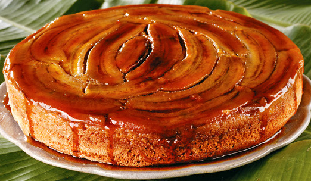

TORTA DE BANANA
INGREDIENTES
- 2 xícaras e 1/2 de farinha de trigo
- 1 xícara de açúcar
- 2 ovos
- 1 colher de chá de sal
- 2 colheres de sopa de margarina
- 1 colher de chá de fermento em pó
CREME:
- 1/2 litro de leite
- 1 copo de requeijão de açúcar
- 1/2 copo de requeijão de farinha de trigo
- 3 colheres de sopa de leite condensado
MONTAGEM:
- Banana
- Canela
- Açúcar
MODO DE PREPARO
- Em uma vasilha coloque 2 xicaras e meia de farinha de trigo, 1 xícara de açúcar, 2 ovos, 1 colher de chá de sal, 2 colheres de sopa de margarina e uma colher de chá de fermento em pó
- Amasse bem com as mãos até obter uma massa lisinha abra na assadeira de fundo removível com 1 cm de espessura
- Reserve um pedacinho da massa pra fazer as tirinhas de acabamento
CREME:
- Levar no fogo meio litro de leite para ferver, enquanto isso misture em uma vasilha 1 copo de requeijão de açúcar com meio copo de requeijão de farinha de trigo, quando o leite levantar fervura despeje esta mistura e mexa por 10 minutos
- Desligue e acrescente ao creme 3 colheres de sopa de leite condensado
MONTAGEM:
- com a forma toda forrada de massa de despeje uma camada de creme coloque 1 banana toda fatiada e polvilhe canela e açúcar
- Despeje o restante do creme e coloque outra camada da banana, novamente polvilhe com açúcar e canela
- Faça tirinhas com a massa restante e coloque sobre as bananas, leve ao forno pré-aquecido por 30 minutos na temperatura de 200°C